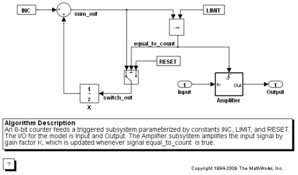
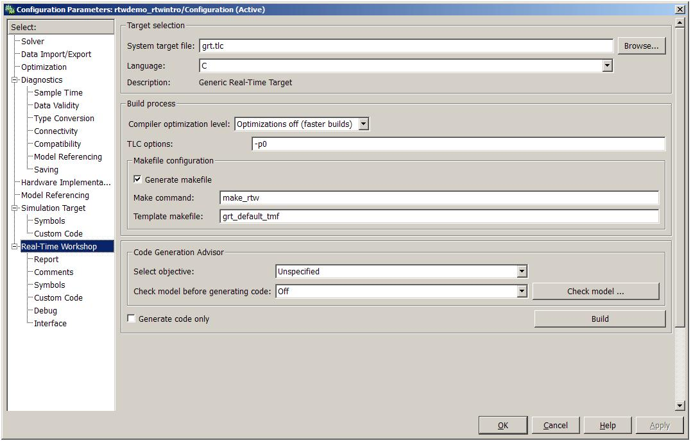
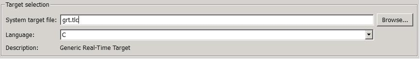
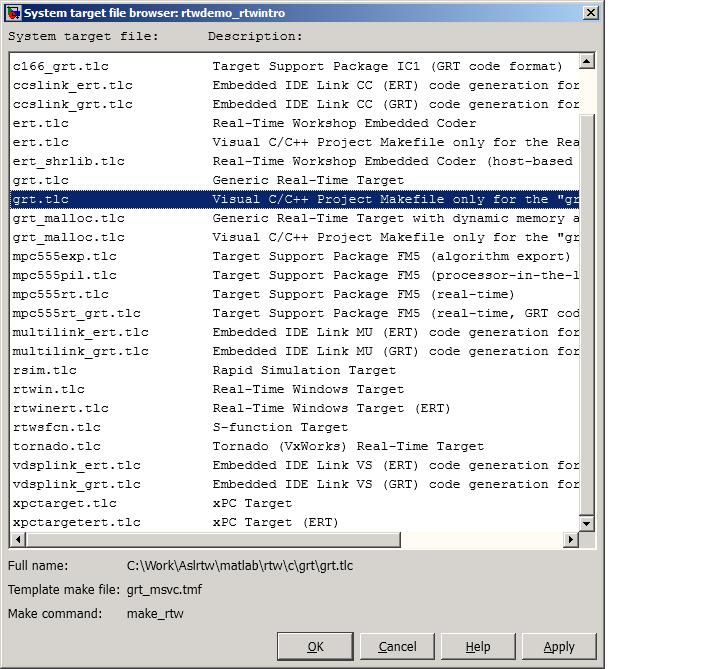
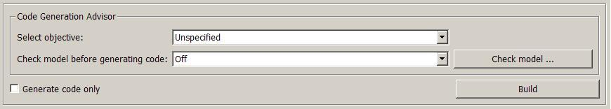
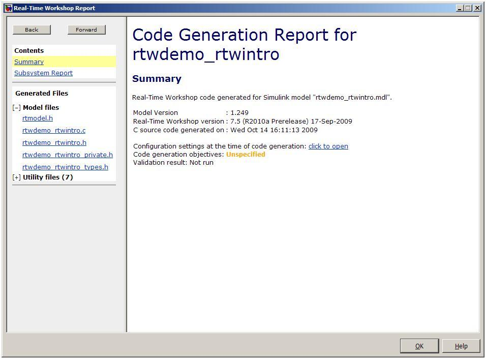

Real-Time Workshop 製品を使ったコード生成
このデモでは、リアルタイム シミュレーション、ラピッド プロトタイピング、またはハードウェアインザループ (HIL) のテストに使用する C コードをすばやく生成する方法を示します。
モデルに対する Real-Time Workshop ターゲットを選択し、コードを生成し、結果のファイルを表示します。
目次
モデルを開く
このデモでは、簡単なカウンター モデルのコードを生成します。以下の MATLAB コマンドを入力して、このモデルを開きます。
model='rtwdemo_rtwintro';
open_system(model)
 ターゲットに応じて設定
Real-Time Workshop ソフトウェアを設定することにより、コード生成オプションとパラメーターを使用してさまざまなターゲットに対するコードを生成できます。オプションとパラメーターはモデルのコンフィギュレーション セットに統合されており、このモデルは、スタンドアロンの [コンフィギュレーション パラメーター] ダイアログ ボックスや Simulink モデル エクスプローラーで表示できます。
モデルの [シミュレーション] メニューから、または以下の MATLAB コマンドを入力して、スタンドアロン モデルの [コンフィギュレーション パラメーター] ダイアログ ボックスを起動します。
cs = getActiveConfigSet(model); openDialog(cs);

スタンドアロン実行可能ファイルとラピッド プロトタイピングのためにモデルを設定
コードは、特定のターゲット環境や目的に応じて生成できます。いくつかの組み込みのターゲット設定オプションが、システム ターゲット ファイルを使用して提供されています。
ラピッド シミュレーション ターゲットを使用すると、モンテ カルロ シミュレーションに適したスタンドアロンの実行可能ファイルを作成できます。このソフトウェアと Parallel Computing Toolbox ソフトウェアを組み合わせると、コンピューター クラスター上で多数のモデル シミュレーションを、1 台のコンピュータ上で実行するよりも速く実行できます。また、xPC Target 製品を使用してラピッド プロトタイピングやハードウェアインザループのテストを実行するためのコードを生成することもできます。
[コンフィギュレーション パラメーター] > [Real-Time Workshop] ペインで [参照] をクリックし、コンピューターにインストールされている使用可能なターゲットの一覧を表示します。


コード生成オプションを設定
このデモでは、既定の汎用 Generic Real-Time (GRT) ターゲットを使用して、リアルタイム シミュレーター用の ANSI C コードを生成します。GRT ターゲットで使用可能なコード生成オプションはいくつかあります。既定の設定でコードを生成するには、[コンフィギュレーション パラメーター] > [Real-Time Workshop] ペインで [ビルド] をクリックします。

コードを生成して表示
コードを生成すると、コード生成レポートが表示されます。ファイル rtwdemo_rtwintro.c が、関連するユーティリティおよびヘッダー ファイルと共に生成されます。コードには、ラピッド プロトタイピングやリアルタイム シミュレーション、ハードウェアインザループなどに最適な計測機能およびインフラストラクチャが含まれています。このような用途では、中間信号とパラメーターがすべて表示されていることが不可欠です。

これよりも簡潔で追跡可能なコードを生成する場合は、Real-Time Workshop Embedded Coder 製品に付属している Embedded Real-Time (ERT) ターゲットを使用します。